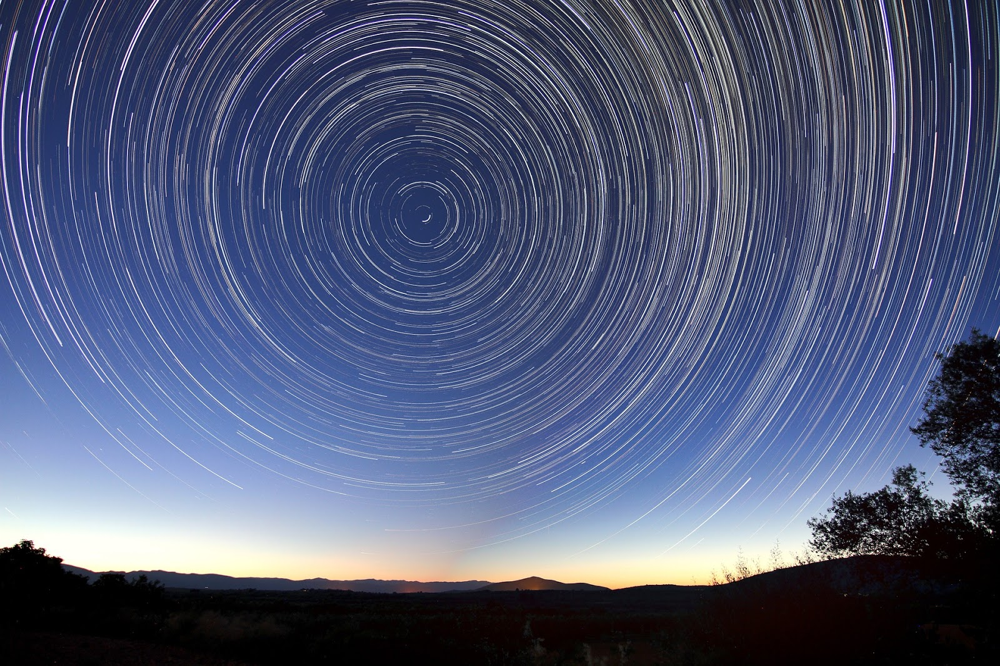

This illustration is an idea that the earth is not moving, but the sun and all celestial bodies that move upon the earth. All of this seems plausible, how the change of day and night, the occurrence of the eclipse, and so forth.
As it orbits the sun seen from the hemisphere outside the line of the equator. This picture is visible from Earth near the north pole which is only slightly during the day.
SUPPORT OUR PROJECT TO MAKE GREAT ILUSTRATION.
WE ARE INDONESIA WEB DESIGNER.
The project is still an early version. Only describe how the heavenly bodies revolve. Rotation time measurement is not based on a real time scale. Extra light effects sun-exposed parts of the globe and who could not be more charming.
Pics: forum.tfes.org, cut2thetruth.wordpress.com